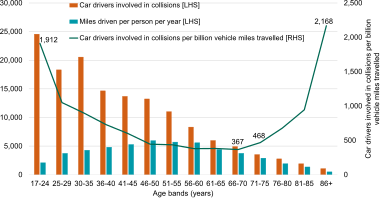
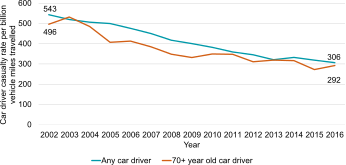

- The United Kingdom’s road network spans 262,900 miles (423,097 km) of paved roads, longer than a trip to the Moon. There are 247,100 miles (397,669 km) of paved roads in Great Britain (England, Scotland, and Wales) and 15,800 miles (25,428 km) in Northern Ireland. (RAC Foundation, 2020)
- In 2018, motor vehicle traffic hit a record high of 328.1 billion vehicle miles (bvm), a 0.3% increase from 2017. The following chart breaks down motor vehicle traffic (in bvm) in 2018 by the type of road. (RAC Foundation, 2020)
- The next chart breaks down motor vehicle traffic (in bvm) in 2018 by the type of vehicle. (RAC Foundation, 2020)
- At the end of March 2020, there were 38.3 million licensed vehicles in Great Britain, a decrease of 0.2% compared to the end of March 2019. This was the first year-over-year decline since quarterly records began in 1994. It also represented the first year-over-year declines in licensed cars (0.1%), licensed motorcycles (2.1%), and licensed heavy goods vehicles (5.6%) since 1994. Only the number of licensed light goods vehicles (such as vans) increased (by 0.7%). These declines are believed due to the closure of vehicle dealerships and showrooms required by the COVID-19 lockdowns. (RAC Foundation, 2020)
- In Great Britain, vans are the fastest-growing category of vehicles. Van traffic now makes up around 16% of total traffic, compared with 10% in 1993. There was an 89% increase in van miles between 1994 and 2018. However, the number of licensed vans rose 88% over the same period, from 2.1 to 4.0 million. Therefore, the annual mileage per van has remained relatively stable. (RAC Foundation, 2020)
- The following chart shows the trend in vehicle miles for each type of motor vehicle from 2000 through 2018. As can be seen, light commercial vehicles (such as vans) enjoyed the greatest percentage growth in vehicle miles, an increase of 57.4% since 2000. On the other hand, vehicle miles travelled by buses and coaches decreased by 28.1% over that same period.
- At the end of December 2019, about 35% of registered keepers of licensed cars were female. Over the last 10 years, the number of female registered keepers of licensed cars has increased by 17%, compared with an increase of only 9% in male keepers. (RAC Foundation, 2020)
- In March 2020, in Great Britain, there were 49,575,788 driving licences registered with DVLA. Of these, 41,178,424 were full driving entitlement licences and 8,397,364 were provisional entitlement licences. (Note, however, that these figures may not accurately reflect the number of active licence holders because the figures include licence holders who had died or emigrated from Great Britain.) (RAC Foundation, 2020)
- In 2018, in England, 75% of all adults aged 17 and over (an estimated 33.6 million people) held a full car driving licence. In 1975–76, the figure was 48% (an estimated 19.4 million people). (RAC Foundation, 2020)
- In 2018, in England, 37% of men and women aged 17–20 held a full driving licence.
- Of the 33.6 million people holding a full car driving licence in England, 17.6 million are men, and 16 million are women. Licence holding among both men and women has increased since 1975–76, but the rate of increase has been greater for women. In 1975–76, 69% of men and 29% of women had a driving licence. In 2017, 81% of men and 70% of women had a licence. (RAC Foundation, 2020)
- In England, between 1995–1997 and 2018, the proportion of people aged 70 or older who held a driving licence increased from 39% to 67%, accounting for 12% of all car driving licence holders in 2018. This is due to the ageing of existing licence holders rather than large numbers of newly qualified drivers in older age groups. The increase among older women is particularly significant: 77% of women aged 60–69 and 54% aged 70 or older held a driving licence in 2018, compared with 46% and 22% in 1995–1997 respectively. (RAC Foundation, 2020)
- In 2019, there were 5.3 million licence holders in Britain who were over 70 years old. 110,000 driving licence holders in Britain were 90–99 years old. And about 300 driving licence holders were 100 years old or older. (BBC News, 2019)
- As of 31 March 2019, in England, there were 2.29 million valid Blue Badges on issue. (Department for Transport, 2019)
- In 2018, in England, 61% of trips were made by car, either as a driver or a passenger. The car is also the most common mode for distance travelled, accounting for 77% of the total distance travelled in 2018. (RAC Foundation, 2020)
- In 2017, 68% of the British population drove a car to work; only 11% of the population used rail services to commute to work. (Statista, 2020)
- In rural areas, 73.4% of workers travel by car (whether as a driver or a passenger). In London, which has excellent public transportation, 29.8% of workers still travel by car. In urban areas outside of London, 67.1% of people travel by car (whether as a driver or a passenger). (RAC Foundation, 2020)
- In the UK as of 2014, there were 283,999 holders of full Class A (motorcycle) licences: 182,918 (64.4%) male and 101,081 (35.6%) female. (Department for Transport, 2015)
- In the UK as of 2019, there were 65,800 registered mopeds (motorcycles up to 50 cc), 276,400 registered light motorcycles (up to 125 cc), and 928,200 registered large motorcycles (up to 1,000 cc). (Department for Transport, 2020)
- In the UK as of 2019 Q4, cars accounted for 82.4% of registered vehicles, light goods vehicles for 10.6%, motorcycles for 3.2%, heavy goods vehicles for 1.3%, and buses and coaches for 0.4%. The remaining 2.0% of registered vehicles comprised a variety of vehicles, such as rear diggers, lift trucks, rollers, ambulances, and taxis (hackney carriages). (Department for Transport, 2020)
- In 2019 Q4, there were 525,800 heavy goods vehicles registered and 4,246,300 light goods vehicles registered. (Department for Transport, 2020)
- In 2019 Q1, there were 302,000 heavy goods vehicle (HGV) drivers and 290,000 van (light goods vehicle) drivers. The UK is experiencing a shortage of HGV drivers of between 45,000 and 52,000 drivers. Not enough young people are choosing a career as an HGV driver. In 2019 Q1, the average age of an HGV driver was 48.2 years. 60% of HGV drivers were over the age of 44, and 14.6% were over the age of 59. Only 19% were under the age of 35. The following chart illustrates how HGV drivers skew older than the general working population. (Logistics UK, 2019)


A word about adjusted figures: The UK Ministry for Transport provides adjusted figures on road casualties (deaths, serious injuries, and slight injuries) as well as the original unadjusted figures. The adjusted figures normalize changes to the injury-based reporting systems used by some but not all police forces. This may no longer be necessary after all police forces have begun using the new injury-based reporting systems. The Ministry for Transport recommends using the adjusted figures where available rather than the unadjusted figures. Accordingly, the UK casualty statistics in this document use the adjusted figures for road casualties.
Speeding Statistics
- In 2018, in Great Britain, speeding was a contributory factor in 12.2% of fatal accidents and 6.7% of accidents involving serious injury. Travelling too fast for the conditions was a contributory factor in 9.4% of fatal accidents and 6.4% of accidents involving serious injury. (Department for Transport, 2019)
- In 2018, in Great Britain, 10.6% of cars and 12.5% of light commercial vehicles (LCVs) on motorways usually exceeded the 70-mph speed limit by 10 mph or more. On 30-mph speed-limit roads, 5.1% of cars and 5.8% of LCVs usually exceeded the speed limit by 10 mph or more. These figures are for free-flowing traffic conditions, where there were no external factors that might have restricted speeds (such as junctions, sharp bends, or speed cameras). See the following charts. (Department for Transport, 2019)
- In 2017, exceeding the speed limit was a contributory factor in 17.5% of fatal motorcycle accidents and 7.5% of motorcycle accidents involving serious injury. This compares with 8.3% of fatal car accidents and 3.9% of accidents involving serious injury in which speeding was a contributory factor. See the following chart. (Department for Transport, 2019)
- A survey of drivers in 2018 found that 9.3% of drivers admitted to breaking speed limits on purpose, and 26.3% of drivers admitted to breaking speed limits on purpose and by mistake. Furthermore, 8.4% of drivers admitted to breaking speed limits on every journey, and 17.0% of drivers admitted to breaking speed limits on more than half of their journeys. See the following charts. (Brake, 2019)
- According to US data, even a 10-mph speed increase ups the risk of a crash by 9.1%. (Fortune, 2016)


Accident Statistics
- In 2018, there were 122,635 reported road traffic accidents of all severities, a rate of 370 accidents per billion vehicle miles. These accidents involved 1,671 deaths and 23,165 serious injuries. (Department for Transport, 2018) Note, however, that these figures are as reported to the police. Non-fatal (and particularly slight) casualties are sometimes not reported to the police, so reported road traffic accidents may underestimate the actual number of accidents. (RAC Foundation, 2020)
- There are about 400,000 rear-end shunts (collisions) each year in the UK, accounting for 27% of all road traffic accidents. Rear-end collisions account for about 75% of all bodily injury claims in accidents (usually resulting from whiplash for the occupants of the vehicle that was struck from behind). (RTA Assistance Limited, 2020)
Driving Ability Statistics
- More than 90% of road crashes are the result of human error or condition. (Traffic Injury Research Foundation, 2019)
Aggressive Driving Statistics
- In 2018, aggressive driving contributed to 3,261 road accidents, including 114 fatal accidents. (Brake, 2020)
- The Highway Code recommends that every vehicle maintain at least a two-second following distance behind the vehicle in front (and four seconds in bad weather). However, data obtained from the Department of Transport’s automatic traffic counters indicates that many drivers are not following this rule. In 2018, on Great Britain’s roads, 26% of cars, 34% of motorcycles, 26% of light commercial vehicles, 14% of heavy goods vehicles, and even 17% of buses were less than two seconds from the vehicles in front. See the following chart. (Department for Transport, 2020)
- 43% of drivers report being victimised by other drivers who were experiencing road rage. (Brake, 2020)
- A survey of 1,000 drivers in 2018 found that 42% of drivers aged 18–34 admitted to experiencing road rage at least once a week, and 14% of younger drivers experienced road rage every day they drove. 20% of drivers aged 35–54 and 7% of drivers over 55 years of age experienced road rage once a week. (BigChange, 2018)
- That same survey found that among drivers who regularly drove for work, female drivers were more likely to experience road rage than male drivers. 27% of female drivers and 18% of male drivers experienced road rage at least once a week. (BigChange, 2018)

Pedestrian Safety Statistics
- Pedestrians have a 90% chance of surviving a crash at 30 km/h (19 mph) or less but only a 50% chance at higher speeds. (AutoInsurance.org, 2018)
- A pedestrian who is struck at 32 km/h (20 mph) has a 10% chance of dying. A pedestrian who is struck at 64 km/h (40 mph) has an 80% chance of dying. (Active Transportation Alliance, 2018)
- In 2018, in the UK, 6,238 pedestrians were killed or seriously injured (KSI) in road accidents, a rate of 97 pedestrians KSI per million population. (Department for Transport, 2019)
- From 2011 to 2017, an average of 59.2% of the pedestrians killed or seriously injured each year were male. (Department for Transport, 2019)
Wildlife Safety Statistics
- One million animals and ten million birds are killed on UK roads each year. (Post Office® Car Insurance, 2008)
- Road collisions with deer are responsible for some 20 deaths and 400 injuries on England’s strategic road network each year. 74,000 deer are killed in road accidents in England each year. (Highways England, 2019)
Winter Driving Statistics
- In 2013–2015, the frequency of car accident insurance claims per mile was 20% greater from December through February than from June through August. (Insure the Box Limited, 2015)
- Weather-related vehicle accidents kill more people annually than large-scale weather disasters. (The Weather Channel, 2018)
- It takes up to 10 times longer to stop on snow and ice than it does on dry pavement. (Geico Insurance, 2018)
Child Safety Statistics
- Extreme heat affects infants and small children more quickly and dramatically than adults because of their size. A study funded by General Motors of Canada found that within 20 minutes, the air temperature in a previously air-conditioned small car exposed to the sun on a 35 °C day (95 °F) exceeded 50 °C (122 °F). Within 40 minutes, the temperature soared to 65.5 °C (150 °F). Leaving a window slightly open did little to prevent the inside of the vehicle from becoming dangerously hot.
General Driving-Related Injuries and Fatalities
- Road traffic crashes are the eighth leading cause of death for people of all ages. (WHO, 2018)
- Every year, roughly 1.3 million people die in car accidents worldwide – an average of 3,287 deaths per day. (SaferAmerica, 2019)
- Road traffic crashes cause 20–50 million injuries worldwide each year. (WHO, 2018)
- The number of annual road traffic deaths worldwide has reached 1.35 million. (WHO, 2018)
- In the European Union, there were 25,100 road fatalities in 2018, a decline of 21% compared with 2010. This represents an average of 49 road deaths per one million inhabitants. By this measure, the European Union’s roads are the safest in the world. (European Commission, 2019)
- In Great Britain, in the year ending June 2019, 27,820 people were killed or seriously injured in road accidents. (Department for Transport, 2019)
- In Great Britain from 2009 to 2019, road traffic (in vehicle miles) increased by 7%, but traffic deaths decreased by 24% and total casualties (killed, seriously injured, and slightly injured) decreased by 29%. (Department for Transport, 2019)
- In 2008, the United Kingdom had the lowest fatalities per billion vehicle kilometres travelled, compared with other member countries of the Organisation for Economic Cooperation and Development (OECD). See the following chart. (Road Safety Canada Consulting, March 2011)

Injuries and Fatalities by Location
- Death rates from road traffic accidents are three times higher in low-income countries than in high-income countries. (World Health Organization, 2018)
- In 2018, there were 28,080 persons killed or severely injured in road accidents: 24,424 in England, 1,131 in Wales, 1,740 in Scotland, and 785 in Northern Ireland. (Department for Transport, 2019)
- In 2015–2016, 1,784 roadworkers were killed or seriously injured on England’s strategic road network, with an accident frequency rate of 0.77 accidents per 100,000 hours worked. (Highways England, 2017)
Injuries and Fatalities by Type of Road User
- More than half of all road traffic deaths worldwide are among pedestrians, cyclists, and motorcyclists. (WHO, 2018)
- In Great Britain, in the year ending June 2019, 37.7% of the persons killed or seriously injured were in cars, 13.6% were riding bicycles, 21.2% were riding motorcycles, 22.6% were pedestrians, and 4.9% were other types of road users. Note that motorcycle riders accounted for only 0.8% of vehicle miles travelled (see the Motor Vehicle Traffic chart in the Driver Demographics section) but 21.2% of the deaths and serious injuries. See the following chart. (Department for Transport, 2019)
- Another way to look at the persons killed or seriously injured is by the types of vehicles involved in the casualties. See the following chart for 2018. (Department for Transport, 2019)
- The number of car occupants who were killed or seriously injured decreased from 15,027 in 2009 to 11,539 in 2019, a decline of 23.2%. See the following chart. (Ministry for Transport, 2019)
- The number of motorcycle users (operators and passengers) who were killed or seriously injured decreased from 7,438 in 2009 to 5,892 in 2019, a decline of 20.8%. (However, at least part of this decline in casualties may reflect the decline in motorcycle traffic that took place in that period. See the Index of Vehicle Miles chart in the Driver Demographics section.) See the following chart. (Ministry for Transport, 2019)
- The number of occupants of goods vehicles (both heavy- and light-goods vehicles) who were killed or seriously injured decreased from 811 in 2009 to 779 in 2019, a decline of 3.9%. This decline occurred despite the sharp increase in commercial van traffic during that period. (See the Index of Vehicle Miles chart in the Driver Demographics section.) See the following chart. (Ministry for Transport, 2019)
- In 2018, in the UK, 3,806 pedal cyclists were killed or seriously injured (KSI) in road accidents, a rate of 59 pedal cyclists KSI per million population. (Department for Transport, 2019)
- From 2011 to 2017, an average of 82.5% of the pedal cyclists killed or injured each year were male. (Department for Transport, 2019)


Injuries and Fatalities by Gender
- Men account for 73% of all road traffic deaths worldwide, three times the rate of women. (Brake, 2020)
- In Great Britain, men account for 74% of road traffic deaths, 69% of serious injuries and 57% of slight injuries on the roads. (Brake, 2020)
- In Great Britain, among operators of vehicles (including pedal cycles), the vast majority who were killed or seriously injured in road accidents were male. In 2018, males made up 82% of cyclist deaths and serious injuries, and 94.6% of motorcyclist deaths and serious injuries. Males also made up 58.0% of pedestrian deaths and serious injuries. However, most of the deaths and serious injuries among passengers in cars, motorcycles, and buses and coaches, were female. See the following chart. (Department for Transport, 2019)

Injuries and Fatalities by Age
- The following chart shows the distribution of fatalities and serious injuries by age group in 2019. The data includes young people in all roles: car drivers, car passengers, motorcyclists, etc. As can be seen from the chart, more people in the 20–29 age group were killed or seriously injured than in any other age group. (Department for Transport, 2020)
- For UK car drivers in 2018, the rates of deaths and serious injuries per million population by age were as follows (Department for Transport, 2020):


As can be seen in the above chart, drivers aged 16–19 were 38% more likely to be killed or seriously injured than drivers aged 40–49, and drivers aged 20–29 were 65% more likely to be killed or seriously injured than drivers aged 40–49.
Distracted Driving Statistics
- One survey of drivers in six countries found that 35% admitted to changing their clothes while driving, 13% admitted to applying makeup while driving, and 15% admitted to engaging in sexual activity while driving. (WIRED, 2010)
- In 2018, there were 1,456 fatal accidents in Great Britain. Driver distraction was a contributory factor in 110 of them – nearly as many as for alcohol impairment (117 fatal accidents). Distractions included using a mobile phone while driving (25 fatal accidents), some other distraction inside the vehicle (68 fatal accidents), and some distraction outside the vehicle (17 fatal accidents). (Department for Transport, 2019)
- A roadside observation survey of drivers in 2017 found that 1.1% of drivers in Great Britain were using a hand-held mobile phone while driving on weekdays. 0.4% of drivers were holding a phone to their ear. For Scotland, the figures were somewhat higher: 2.0% of drivers were using a hand-held mobile phone while driving; 0.9% of drivers were holding a phone to their ear. For England and Wales alone, the figures were somewhat lower: 0.6% of drivers were using a hand-held mobile phone while driving; 0.2% of drivers were holding a phone to their ear. (Department for Transport and Scotland Transport, 2019)
- Out of 11,000 drivers observed in a study conducted in 2014 on roads in St. Albans, England, 16.8% were found to be engaged in a distracting activity, such as talking to passengers (8.8%), smoking (1.9%), talking on a hands-free mobile phone (1.7%), and talking on a hand-held phone (1.0%). The study also found younger drivers are more likely to be engaged in distracting activities. (Brake, 2020)
- In a survey of 1,009 drivers conducted in 2019, the vast majority of drivers agreed that personal grooming (81%), using a hand-held mobile device (77%), and challenging interactions with passengers (such as heated arguments) (67%) were very distracting from the task of driving. In addition, 49% of drivers agreed that adjusting a satellite navigation system while driving was very distracting, and another 42% of drivers considered it slightly distracting. Not all drivers agreed, however. 4% of drivers surveyed didn’t consider texting on a hand-held mobile device distracting. 5% of drivers surveyed didn’t consider having a conversation on a hand-held mobile device distracting. 5% of drivers surveyed didn’t consider personal grooming distracting either. And evidently, even some drivers who did consider these activities distracting continued performing them regularly. 6% of drivers admitted to texting on most or all of their journeys, 7% of drivers admitted to performing personal grooming activities on most or all of their journeys, and 8% of drivers admitted to having conversations on their hand-held mobile devices during most or all of their journeys. Finally, note that while only 16% of drivers surveyed said that adjusting vehicle controls unrelated to the driving task (such as the radio) wasn’t distracting, 29% of drivers surveyed admitted to adjusting such controls during most or all of their journeys. See the following two charts. (Brake and Direct Line, 2020)
- Dialling a phone number while driving increases a teen's risk of crashing by six times. (NHTSA, 2018)
- Dialling a phone is one of the most dangerous distractions, increasing a driver's chance of crashing by 12 times. (Virginia Tech Transportation Institute, 2016)
- Texting while driving increases the risk of crashing by 23 times. (NHTSA, 2018)
- Texting increases your chances of rear-ending someone by a factor of 7. (AAA Foundation for Traffic Safety, 2018)
- The maximum amount of time that a driver can safely divert his or her attention from the road is two seconds. It takes a driver an average of five seconds to send a text message. (TeenSafe, 2018)
- Sending or reading a text message takes your eyes off the road for an average of five seconds. At 60 mph, your vehicle will travel 440 feet in five seconds.
- Driving while crying or visibly angry increased the risk of crashing by 10 times. (Virginia Tech Transportation Institute, 2016)
- Using a hands-free electronic device is four times more distracting to a driver than talking to an adult passenger. (Driver's Alert, 2017)
- Child passengers can be 12 times more distracting to a driver than talking on a mobile phone. One study found that the average parent driver in the United States took his or her eyes off the road for three minutes and 22 seconds during a 16-minute trip. (Monash University, 2013)
- Manual transmission vehicles double the chances of distracted driving crashes caused by food consumption. (Drive-Safely.net, 2019)

Alcohol-Impaired Driving Statistics
- A driver with a blood alcohol content (BAC) of 0.10% is 51 times as likely as a non-drinking driver to be involved in a fatal crash. (MADD Canada, 2020)
- In England and Wales, 85,000 people are convicted of drink driving related offences each year. Around 85% of them are male. (Drinkdriving.org, 2020)
- In 2014, the cost of drink-drive accidents in the United Kingdom that year was estimated at £ (Institute of Alcohol Studies, 2019)
- In 2018, in Great Britain, about 240 ± 20 people were killed in accidents in which at least one driver or rider was over the legal drink-drive limit. This represents about 13% of all deaths in reported road accidents. The proportion of fatalities in which drink driving was a factor has declined over time. In 1979, 26% of fatalities had occurred in accidents in which at least one driver or rider was over the legal drink-drive limit. (Department for Transport, 2018)
- From 1979 to 2018, the number of road traffic accidents per year declined by 52%, but the number of drink-drive accidents per year declined by 70%, suggesting that some drink-drive policies have successfully reduced the rate of drink-driving accidents. (Department for Transport, 2018)
- The following chart shows the breakdown of drink-driving serious casualties (deaths and serious injuries) by casualty type in Great Britain in 2017. As can be seen from the chart, car drivers had the most casualties – 44.8% of the total. Even just the car drivers who had been over the legal alcohol limit (0.08%) had more casualties than any other type of casualty. However, bear in mind that motorcycles have accounted for less than one per cent of total vehicle miles travelled (see the Motor Vehicle Traffic chart in the Driver Demographics section). Note also that 160 car drivers (9.8% of the total) were killed or seriously injured in 2017 even though their blood alcohol levels had not exceeded the legal limit. Finally, note that some of these figures are inexact because of rounding errors. This UK dataset originally broke down casualty types by age groups also, which were then summed to produce the figures shown in this chart. However, any age group with fewer than five casualties was excluded from these summations. (Department for Transport, 2019)
- The following chart shows the distribution of fatalities by age in England and Wales in 2017, in which the blood alcohol content (BAC) of the driver or rider had been over the legal limit. (Department for Transport, 2017)
- In Great Britain in 2017, 73.8% of the drink-drive serious casualties (deaths and serious injuries) were male; 26.2% were female. (Department for Transport, 2019)
- In a survey of 1,000 drivers and riders conducted in 2013–2014, nearly all of them responded that they would warn a friend who was drinking not to drive – but perhaps not right away. Only 36% of men and 41% of women would warn the friend after he or she had consumed just one drink. 19% of men and 12% of women would not warn the friend until after he or she had consumed three or more pints or was so drunk as to be falling over. Generally, female drivers were more likely than male drivers to speak up if a friend intended to drink and drive. See the following chart. (Brake, 2013–2014)
- Next, that same survey asked respondents how far they would personally go to stop someone from drink driving. There were significant differences depending on whether the drinking person was a friend or a stranger. Respondents were more likely to talk with the person, take the person’s keys, or find the person another way home if the person was a friend. Respondents were more likely to call the police or ask someone else to do something if the person was a stranger. See the following chart. (Brake, 2013–2014)


Drug-Impaired Driving Statistics
- In 2010, it was estimated that some 200 people were being killed on Britain’s roads each year by drivers on drugs. (Department for Transport, 2010)
- A survey of 1,000 drivers conducted in 2016 found that 7% of the drivers admitted to drug driving at least once within the past year. 3% of the drivers admitted to drug driving once a week or more. 8% of drivers said they had been passengers in vehicles operated by drivers who had taken drugs and might still have been impaired by them. Finally, the drivers were asked whether they would still accept a ride from a designated driver if they found out that the designated driver had taken drugs. 13% of drivers answered in the affirmative. (Brake, 2016)
- In a survey of 1,000 drivers and riders conducted in 2013–2014, 2% of them admitted to having driven within the past year after using cannabis, 1% admitted to having driven after using cocaine, and 3% admitted to having driven after using other illegal drugs. They were then asked what they would do if a close friend was intending to drive after using illegal drugs. 71% said they would speak up about it. However, 24% said they would speak up about it only if their friend appeared obviously drug-impaired, and 5% said they would not speak up at all. (Brake, 2013–2014)
- In this same survey, 11% of drivers and riders admitted to driving within the past year after taking prescription or over-the-counter medications that warn you not to drive. 6% admitted to doing so once a month or more. 7% said they were unsure whether they had taken such medications because they didn’t always check the warnings. (Brake, 2013–2014)
- Evidently, many of these drivers didn’t realize how many different legal medications could affect their driving. Most drivers knew that some painkillers, some allergy medications and some cough medicines could affect their driving. However, only 21% of male drivers and 27% of female drivers knew that certain diet pills could affect their driving, and only 19% of male drivers and 20% of female drivers knew that certain medications for treating heartburn or indigestion could affect their driving. Generally, female drivers were more aware of how many medications could affect their driving than male drivers were. See the following chart. (Brake, 2013–2014)

Finally, as can be seen from the chart, 11% of male drivers and 7% of female drivers didn’t believe that any of these medications could affect their driving. (According to the NHS, some medications in each of the categories shown on the chart can affect one’s driving.) (Brake, 2013–2014)
- A study conducted in 2000 by the Transport Research Laboratory found that 5.2% of drivers and 4.1% of motorcyclists killed in road crashes had traces of legal medications that could have affected their driving. (Brake, 2013–2014)
- 50 mg of diphenhydramine (a popular over-the-counter antihistamine) can impair your driving more than a blood alcohol content (BAC) of 0.10%. (In England, Wales and Northern Ireland, the legal limit for BAC is 0.08%. In Scotland, the legal limit is 0.05%.) (University of Iowa, 2000)
Driver Tiredness Statistics
- According to data from Australia, England, Finland and other European nations, driver tiredness is responsible for 10–30% of all crashes.
- A study published by the Parliamentary Advisory Council for Transport Safety in 2016 estimated that up to a quarter of fatal accidents are caused by drivers who have fallen asleep at the wheel.
- In 2018, in Great Britain, fatigue was listed as a contributory factor in 62 traffic fatalities (4.3% of total fatalities) and 339 accidents involving serious injury (1.8% of all such accidents). Note: The number of fatalities that were due at least in part to fatigue may have been much higher than these official statistics. Unlike the tests for blood alcohol, there is no test to determine whether someone who was killed had been fatigued at the time. (Department for Transport, 2018)
- In 2018, an AA Charitable Trust survey of 20,561 drivers found that 13% of them (17% of male drivers and 5% of female drivers) admitted to having fallen asleep at the wheel. The most common reasons for becoming drowsy while driving were a hard day at work (39%), the monotony of the journey (33%), and driving late at night (27%).
- Rule 91 of the UK Highway Code recommends that drivers and motorcyclists take a break from driving for at least 15 minutes every two hours. However, the results of a survey of 1,000 drivers and riders conducted in 2013–2014 suggest that many are not following this basic advice. Only 45% of these respondents said that they would stop for a rest break at least every two hours. 9% of these respondents said that they wouldn’t stop for a break at all unless they absolutely had to. (Brake, 2013–2014)
When asked what they do if they felt drowsy while driving, 8% responded that they mostly try to push through the tiredness (by turning on the radio or some other method) rather than stop, and 2% responded that they always try to push through the tiredness rather than stop. (Brake, 2013–2014)
- Being awake for 18 hours can impair driving as much as a blood alcohol content (BAC) of 0.05%. Being awake for 24 hours can impair driving as much as a BAC of 0.10%. (In England, Wales and Northern Ireland, the legal limit for BAC is 0.08%. In Scotland, the legal limit is 0.05%.) (National Sleep Foundation, 2018)
- Drivers missing 2–3 hours of sleep in 24 hours more than quadrupled their risk of a crash compared with drivers getting the recommended seven hours of sleep. (AAA Foundation for Traffic Safety, 2016)
- If a driver falls asleep for just four seconds while travelling at a speed of 62 mph (100 km/h), the vehicle will travel 364 feet (111 m) without a driver in control. In comparison, the length of a standard soccer pitch or UK football field is 345 feet (105 m). (Transport Accident Commission, 2018)
- Driving while sleepy can make a driver approximately two-and-a-half times as likely to have a motor vehicle accident. (Sleep, Journal of the Sleep Research Society, 2017)
- Drivers who get only five or six hours of sleep in 24 hours nearly double their risk of a crash. (AAA Foundation for Traffic Safety, 2016)
- With less sleep, consuming alcohol has been shown to be associated with many more “off-road deviations,” indicating that alcohol compounds the effects of fatigue. (Traffic Injury Research Foundation, 2012)
- The common cold can increase a driver’s reaction time about as much as a blood alcohol content (BAC) of 0.08% (which is the legal limit in England, Wales and Northern Ireland). This does not include possible additional driving impairment from medications taken to treat the common cold. (Cardiff University, 2012)

Young Driver Accident Statistics
- Worldwide, road traffic injuries are currently the leading cause of death for children and young adults aged 5–29 years. (World Health Organization, 2018)
- Worldwide, road crashes are the single greatest cause of death for men aged 15–29, and the second greatest for all persons aged 15–29. (World Health Organization, 2018)
- More than 8,500 young car drivers die in the 30 OECD countries each year. In OECD countries, persons under 25 years of age comprise 10.1% of the population, but drivers under 25 years of age account for 26.7% of driver fatalities. (Organisation for Economic Co-operation and Development, 2006)
- According to the AA Charitable Trust, 40% of UK drivers have crashed by the time they are 23 years old, and 26% of drivers have crashed within two years of obtaining their licence.
- As mentioned in the Driving Injuries and Fatalities section, drivers aged 16–19 were 38% more likely to be killed or seriously injured than drivers aged 40–49, and drivers aged 20–29 were 65% more likely to be killed or seriously injured than drivers aged 40–49.
Senior Accident Statistics
- The fatality rate for drivers over 75 years of age is more than five times higher than the average, and their injury rate is twice as high. (EU Mobility & Transport, 2019)
- In Europe, older drivers are over-represented in crashes at intersections. Typically, the older driver turns against oncoming traffic with the right-of-way on the main road. (EU Mobility & Transport, 2019)
- In 2018, in Great Britain, 134 drivers at least 70 years old were killed in traffic accidents, and another 3,319 drivers at least 70 years old were seriously injured. (Department for Transport, 2018)
- In England, car drivers who are 70 years of age or older are involved in fewer collisions than younger drivers. However, this is probably because these older drivers tend to drive less per year than younger drivers. The number of collisions per billion vehicle miles travelled (bvm) declines with increasing age until about age 70, when it starts to rise sharply. Drivers who are at least 86 years old are involved in more collisions per bvm than young drivers aged 17–24. See the following chart. (Department for Transport, 2018) 
- The casualty rate (deaths, serious injuries, and slight injuries) for car drivers who are 70 years of age or older is slightly lower than for other drivers, even when taking vehicle miles travelled into account. In 2016, in England, there were 292 older driver casualties (deaths, serious injuries and slight injuries) per bvm, versus 306 casualties for drivers of all ages. From 2002 to 2016, the casualty rate for older drivers declined by 41%, although the casualty rate for all drivers declined slightly more – by 44%. See the following chart. (Department for Transport, 2018) 
- In 2016, the road user group with the largest number of casualties for older drivers was car drivers, with 5,276 casualties among older drivers. However, the road user group with the largest proportion of casualties for older people was older bus or coach occupants, comprising 21.1% of all bus or coach casualties. The next largest group was older pedestrians, comprising 10.8% of all pedestrian casualties. See the following chart. (Department for Transport, 2016)

Trucking Statistics
- In 2018, heavy goods vehicles (lorries) travelled 17.1 billion vehicle miles, representing 5.2% of total motor vehicle traffic (328.1 billion vehicle miles). Lorry traffic was up 13.3% from 1993. (Department for Transport, 2019)
- Lorry traffic in Great Britain has been closely correlated with economic changes. Lorry traffic declined by 10.3% in the 2007–2009 recession, when the UK Gross Domestic Product fell 4.6%. In 2012–2018, when UK GDP rose 15.9%, lorry traffic increased by 9.9%. (Department for Transport, 2019)
Note, however, that this correlation between lorry traffic and UK GDP appears markedly stronger for lorries with four or more axles. From 1993 to 2018, traffic of lorries with four or more axles tended to rise or fall with GDP, rising 87% in that period overall. On the other hand, traffic of lorries with fewer than four axles underwent a long-term decline in that period, falling 27.5% overall. See the following chart. (Department for Transport, 2019)

- In Great Britain, heavy goods vehicles (HGVs) have been involved in a disproportionate share of traffic fatalities. For example, in 2016, HGVs made up 11.4% of traffic (in billions of vehicle miles) on motorways but were involved in 33.3% of motorway fatalities, a ratio of 292%. This ratio of roughly triple the fatalities per vehicle mile for HGVs as compared with all vehicles has remained roughly constant for motorways and A roads over the past decade. The ratio for minor roads has been higher than for motorways or A roads, and it may have increased since 2012. See the following chart. (Campaign for Better Transport, 2017)

Bus Driving Statistics
- In England, buses remain the most popular form of public transport. 59% of all public transport journeys are by bus. 4.4 billion bus journeys are made each year. However, the number of bus journeys per year is down sharply from the mid-1950s, when over 13 billion bus trips were made each year. (Campaign for Better Transport, 2019)
- In Great Britain, most bus and coach mileage is accumulated on urban roads near densely populated areas. However, from 2008 to 2018, bus and coach mileage decreased by 16.2% on urban A roads and 34.5% on urban minor roads. Bus traffic on motorways and rural roads is also down. These changes are at least partly due to decreases in local bus mileage outside London over the last decade. See the following chart. (Department for Transport, 2019)
- Londoners still rely on bus transport, but in England outside London, the average number of bus journeys per person per year declined from 54 in 2009 to 46 in 2017. Today, bus journeys in London account for more than half of bus journeys in England. In most other cities, there are only about half as many bus journeys per year as there were ten years ago. (Campaign for Better Transport, 2019)
- Unlike Canada or the United States, Britain does not have a fleet of specially equipped school buses. Instead, a quarter of a million schoolchildren ride transit buses, contracted coaches, mini-buses or taxis to school each school day. (School Bus Fleet, 2019)
- In 2014, in England, 5% of elementary-school children and 29% of secondary-school children regularly took the bus to school. See the following charts.
- In 2018, buses and coaches accounted for 0.7% of vehicle miles travelled. (See the chart “Motor Vehicle Traffic by Type of Vehicle” in the Driver Demographics section.) However, buses and coaches accounted for 3.2% of the persons killed or seriously injured in accidents. See the chart “Killed or Seriously Injured by Vehicle Type” in the Driving Injuries and Fatalities section. (Department for Transport, 2019)


Taxi and Private Hire Vehicle Statistics
Note: In the United Kingdom, a “taxi” (also known as a “hackney carriage”) is a vehicle that can either be hired immediately (such as by being hailed in the street) or pre-booked. A “private hire vehicle” (also known as a “minicab”) must be pre-booked. The Department for Transport statistics include ridesharing vehicles (such as Uber) within the category of private hire vehicles. (Department for Transport, 2017)
- In 2017, in England, the total number of licensed taxis and private hire vehicles reached 281,000, a new record. From 2005 to 2017, the total number of licensed vehicles increased by 52.3%. In 2017, 73% of licensed vehicles were private hire vehicles; the rest were taxis. The number of drivers licensed to drive these vehicles reached 356,300, also a new record. (Department for Transport, 2017)
- From 2015 to 2017, the number of licensed private hire vehicles in England increased by 23.6%. In London, licensed private hire vehicles increased by 39% to 87,400.
- In 2017, in England, there was an average of 5.1 licensed taxi and private hire vehicles per 1,000 people: 1.4 taxis and 3.7 licensed hire vehicles. In London, the average was 12.4 licensed vehicles per 1,000 people: 2.4 taxis and 9.9 licensed hire vehicles. Elsewhere, the numbers of taxis and private hire vehicles per 1,000 people were lower, and it tended to decrease as areas became more rural. (Department for Transport, 2017)
- According to Indeed UK, the average taxi driver's salary in the UK is £31,315 per year. According to Neuvoo UK, the median salary is £36,400 per year.
- In the UK, the average salary of an Uber driver is £37,445 per year. (Indeed UK, 2020)
Seat belt Statistics
- • A roadside observation survey of drivers in 2017 found that 96.5% of drivers in Great Britain were using a seat belt, compared with 96.0% in England and Wales, and 97.3% in Scotland. For front-seat passengers, seat belt usage in Great Britain and England and Wales was lower than for drivers, but it was a bit higher in Scotland. Seat belt usage by rear-seat passengers was lower still. See the following chart. (Department for Transport and Scotland Transport, 2019)
- A study in 2006 found that 30% of car drivers who were killed in accidents in recent years were not wearing their seat belts. Rear-seat passengers made up 13% of the casualties (deaths and injuries) in accidents, but unbelted rear-seat passengers made up 28% of the casualties. (Transport Research Laboratory, 2008).
- In 2018, 26% of car occupants who were killed in accidents in Great Britain had not been using seat belts. (Department for Transport, 2019)
- With 45% to 60% effectiveness, seat belts are the single most effective means of reducing the risk of death in a crash. (AAA, 2019)
- If you are not wearing a seat belt, you are 30 times more likely to be ejected from your vehicle during a crash. (Your chance of death is much higher if you are ejected from your vehicle.) (Driver Knowledge, 2019)
- One study found that in modern cars with front-seat safety devices such as airbags, the risk of a restrained passenger dying in a crash was no greater in the front seat than in the rear seat. Furthermore, unrestrained rear-seat passengers were nearly eight times as likely to sustain a serious injury in a crash as restrained rear-seat passengers. (IIHS and The Children’s Hospital of Philadelphia, 2015)

Airbags Statistics
- According to the Insurance Institute for Highway Safety, the fatality-reducing effectiveness for airbags is 14% when no seat belt is used and 11% when a seat belt is used in conjunction with airbags. Side airbags, which protect the head, chest, and abdomen, reduce driver deaths by an estimated 37%. (Insurance Institute for Highway Safety, 2019)
- Studies indicate that there may be a correlation between height, weight, and driver injuries from airbags. Shorter (under 160 cm or 5’3”) and lighter (under 55 kg or 121 lb) drivers who sit closer to the steering wheel suffer more injuries from airbags. (The Royal Society for the Prevention of Accidents, 2017)
- In general, European airbags hold 35 litres of gas propellant and fully inflate within 25 milliseconds, which means that they expand at anything up to 160 mph. American airbags, usually holding 60 litres of gas, inflate even faster. (The Royal Society for the Prevention of Accidents, 2017)
Other Vehicle Safety Equipment Statistics
- One study has found that electronic stability control (ESC) has reduced the risk of being involved in a crash by 7% (95% confidence limits 3–10%), the risk of being injured in a crash by 9% (3–14%), and the risk of being killed in a crash by 56% (39–68%). (IIHS, 2004)
- A study of fatal crashes conducted by TRL in 2014 concluded that 34% of deaths on England’s strategic road network could have been prevented if every vehicle had been equipped with an automatic emergency braking system (AEBS). AEBS senses the chance of a collision ahead and automatically applies the brakes.
That same TRL study also concluded that 14% of the deaths could have been prevented if every vehicle had been equipped with advisory intelligent speed adaptation (ISA). ISA provides an automatic measure of control over whether a vehicle exceeds the speed limit. Advisory ISA just warns the driver that he or she is exceeding the speed limit; mandatory ISA automatically prevents the vehicle from exceeding the speed limit.
- Studies have shown that forward collision warning (FCW) reduces rear-end crashes by 23%, while FCW with AEBS reduces them by 39%. Studies have also shown that FCW with AEBS reduces the rate of rear-end crashes with injuries by 42%. (IIHS, 2016)
- About 80% of all motorcyclist fatalities and 70% of motorcyclists with serious injuries, involve head injuries. (Department for Transport, 2019)
- According to the United Nations Motorcycle Helmet Study (2016), wearing an appropriate helmet improves a motorcyclist’s chances of survival in a traffic crash by 42% and avoids 69% of injuries to riders.
- Australia has found that wearing protective clothing significantly reduces the risk of injury to the rider in a motorcycle crash. Motorcyclists were significantly less likely to be admitted to the hospital if they crashed wearing motorcycle jackets (relative risk = 0.79, 95% confidence interval: 0.69–0.91), pants (RR = 0.49, 95% CI: 0.25–0.94), or gloves (RR = 0.41, 95% CI: 0.26–0.66). When garments included fitted body armor, there was a significantly reduced risk of injury to the upper body (RR = 0.77, 95% CI: 0.66–0.89), hands and wrists (RR = 0.55, 95% CI: 0.38–0.81), legs (RR = 0.60, 95% CI: 0.40–0.90), feet and ankles (RR = 0.54, 95% CI: 0.35–0.83). Non-motorcycle boots were also associated with a reduced risk of injury compared to shoes or joggers (RR = 0.46, 95% CI: 0.28–0.75). (University of Sydney Australia et al., 2011)
- Europe has found that motorcycle antilock braking systems (ABS) significantly reduce the risk of crashes involving injury to the rider. The effectiveness of motorcycle ABS in reducing injury crashes ranged from 24% (95% confidence interval [CI], 12–36%) in Italy to 29% (95% CI, 20–38%) in Spain, and 34% (95% CI, 16–52%) in Sweden. The reductions in severe and fatal crashes were even greater, at 34% (95% CI, 24–44%) in Spain and 42% (95% CI, 23–61%) in Sweden. (Swedish Transport Administration (STA), 2014)